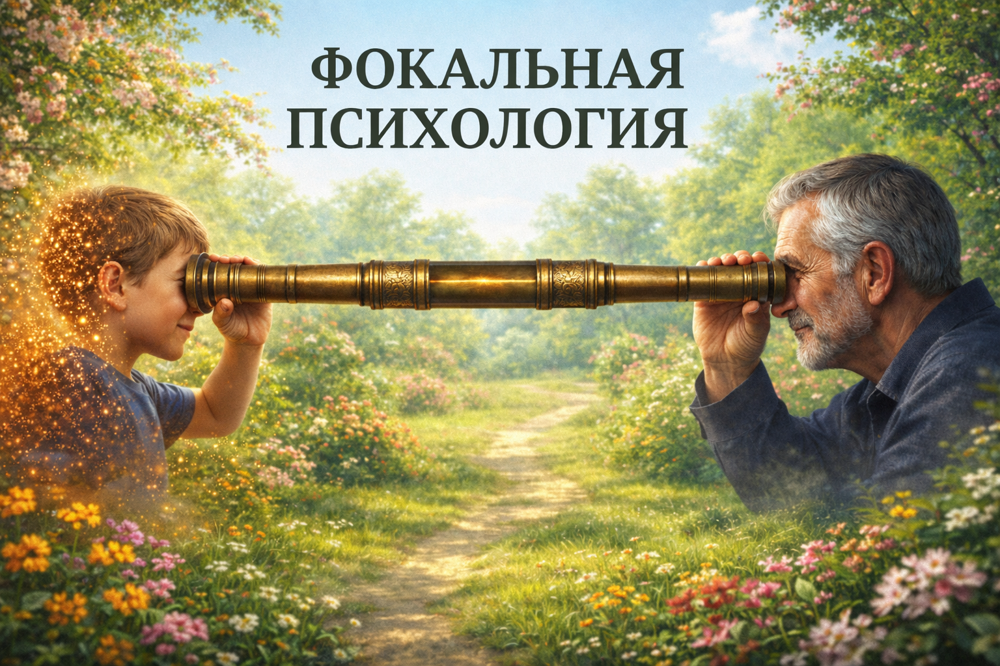
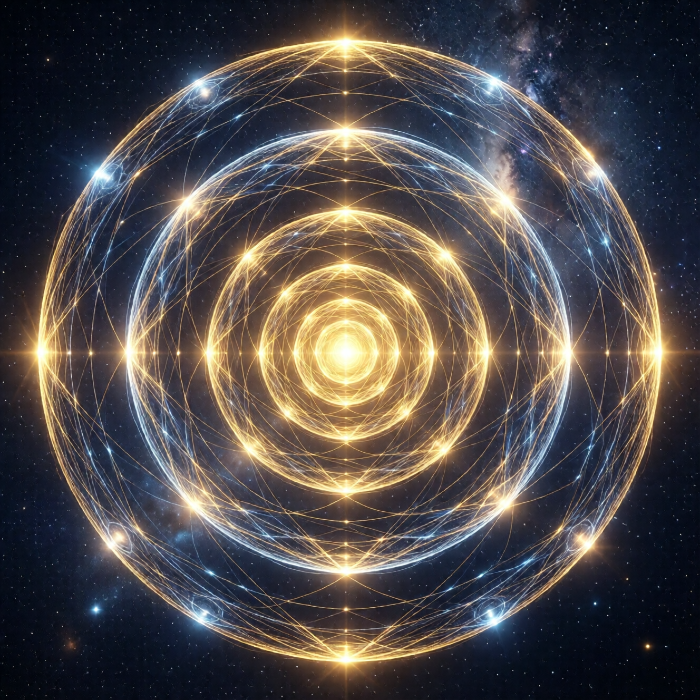

🗺️ Карта
Философский фундамент перед путешествием

Искусство управления вниманием. Синтез психотерапевтических техник с авторской топологией сознания.
Внимание — это не функция психики, а сама суть человека. Всё остальное — наросты на чистом восприятии.
Управляя вниманием, человек управляет собой на глубинном уровне. Ты становишься тем, на что смотришь — это не метафора, а механизм.
Пять слоёв + Колыбель — рабочая модель для навигации по внутреннему миру. Не теория для созерцания, а практический инструмент.
250+ техник с пошаговыми инструкциями. Каждая глава — это практические инструменты с объяснением механизмов.
Сознание имеет структуру. Не хаос, а территория с разными зонами.

Чистое присутствие, восстановление. Единственное безопасное место при любом состоянии.
Наблюдение субличностей как режиссёр. Здесь работает сказкотерапия.
Проживание изнутри, максимальная видимость связей. Диагностический слой.
Социальный интерфейс. Маски как фильтры, калейдоскоп ролей.
Стратегический обзор, мультивселенная выбора. Взгляд орла на жизнь.
Пространство интеграции. Техника двух рук, работа с противоположностями.
От философского фундамента — через резонанс и поток — к Сети Индры
Философский фундамент перед путешествием
Кто смотрит и как это работает
Суперпозиция, коллапс и действие
Пять слоёв + Колыбель
Техники с разбором механизмов
Этика, работа с другими, защита себя
Мост вместо луча. Двусторонний обмен вниманием.
Когда берега исчезают. Растворение границ.
Время как сеть. Контакт с собой во времени. Сеть Индры.
Лестница, которой не было. Некуда идти. Возвращение.
Ты становишься тем, на что смотришь. Информационная диета формирует личность так же, как физическая пища формирует тело.
Пока решение не принято — все варианты существуют одновременно. Застревание в суперпозиции — болезнь современности.
Переход между состояниями — не линейный путь, а изменение угла обзора в многомерном пространстве. Один материал, разные проекции.
Во внутреннем мире тело НЕ подключаем — иначе соматическая паника. Тело включаем только при переносе нового паттерна в реальность.
Нельзя пропускать стадии при переходе между глубокими состояниями. Из Колыбели в реальность без буфера — творческая уязвимость.
Очищенные от религиозного контекста, с объяснением механизмов
Диалог с частью себя без терапевта. Экстернализация внутреннего конфликта.
Создание телесного триггера для нужного состояния. Павловский рефлекс осознанно.
Два конфликтующих состояния как шары в руках. Тело показывает баланс и путь к интеграции.
Проективный нарратив. Подсознание говорит символами, сказка умнее рассказчика.
Локализация эмоции, придание формы, трансформация через внимание.
Системные расстановки в миниатюре. Фигурки показывают скрытую динамику.
«Ты — не твои мысли, не твои роли, не твой характер. Ты — тот, кто смотрит.»